ראשית, נסביר כיצד ניתן לשלוט באפשרויות שונות של התוסף באמצעות לוח ההעדפות; האפשרויות השונות תוצגנה בסעיפים הבאים, יחד עם מושאי השפעתן.
ב-Mozilla Suite, יש לפתוח את לוח ההעדפות הכללי (באמצעות פריט-התפריט Edit->Preferences); בתוך עץ הקטגוריות תימצא לאחר התקנת התוסף, גם הקטגוריה BiDi UI, ואותה יש לבחור:
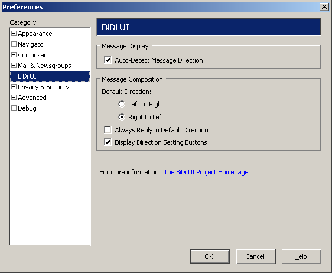ב-Thunderbird, יש לפתוח את מנהל ההרחבות (באמצעות פריט-התפריט Tools->Extensions), ולהקליק כפולות על ההרחבה BiDi UI; אז ייפתח לוח האפשרויות של ההרחבה:
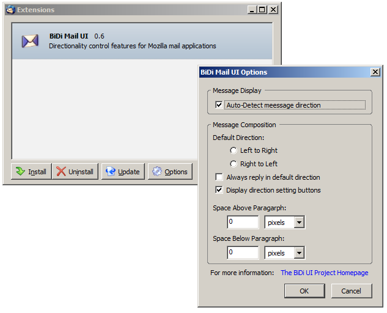התוסף כולל יכולת להפעיל לוגיקת זיהוי כיוון של הודעות הנטענות להצגה, ולקבוע את כיוון ההצגה בהתאם. האפשרות Auto-Detect Message Direction קובעת האם לבצע זיהוי זה אם לאו.
עקרון הזיהוי הוא חיפוש מילה בשפת-כתיבה (script) שכיוונה מימין-לשמאל, במסמך, ואם נמצאה מילה כזו - לקבוע שכיוון המסמך הוא מימין לשמאל. שימו לב שהזיהוי מוטה לטובת כיוון מימין לשמאל; הודעה זו:
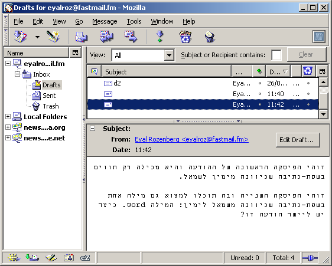תכוון מימין לשמאל, אך כך גם הודעה זו:
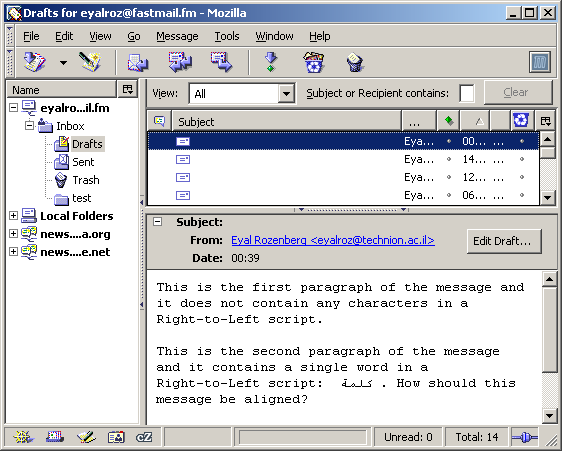כך שבמקרה של מלל מעורב, הכיוון יהיה מימין לשמאל.
קורה לעיתים שהקידוד שמוגדר בהודעה המוצגת שגוי, דבר שעשוי לגרום למוזילה להציג אותיות עבריות במקום אותיות לאטיניות עם אקצנטים. כדי להימנע מכיוון מוטעה של הודעות כאלה, התוסף מתייחס רק למילים שלמות ולא לאותיות בתוך מילים:
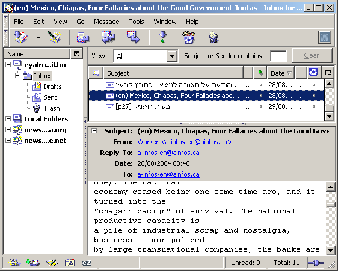זיהוי כיוונה המיועד של כל הודעה, וקביעת כיוון ההצגה בהתאם אליה, מבוצעים בטעינת הודעה להצגה; אם ההודעה נטענת שוב, הזיהוי האוטומטי מופעל שוב. כך, למשל, אם בחרנו הודעה אשר נשלחה בקידוד שגוי, התוסף מכוון אותה משמאל לימין:
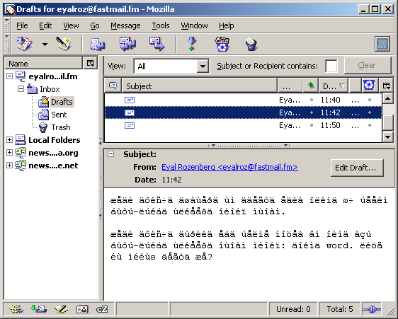שינוי של הקידוד דרך פריט-התפריט View|Character-Encoding (במקרה זה, מ-ISO-8859-1 ל-Windows-1255) יגרום להפעלה-מחדש של לוגיקת זיהוי הכיוון:
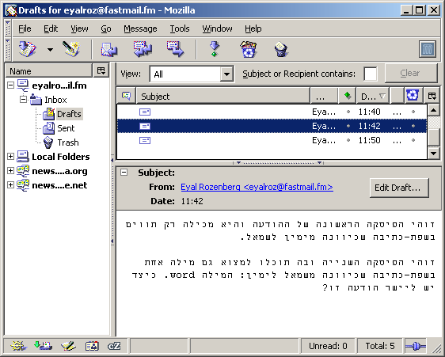בנוסף לזיהוי הכיוון האוטומטי, התוסף מאפשר גם קביעה ידנית של כיוון ההודעה המוצגת. ניתן לעשות זאת באחת מ-3 דרכים:
באמצעות בחירת הפריט המתאים מתפריט ההקשר:
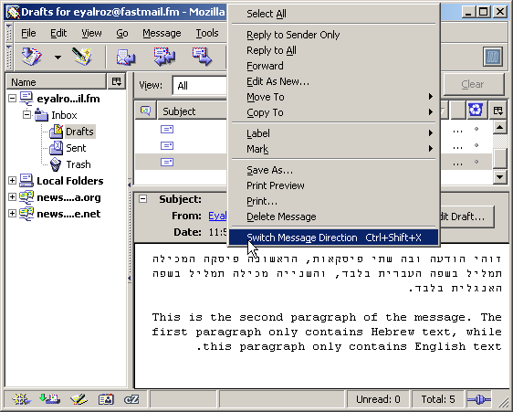באמצעות בחירת הפריט המתאים מתפריט View:
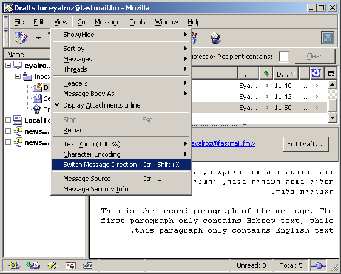והתוצאה המתקבלת תהיה כיוון הפוך מן הכיוון הקודם:
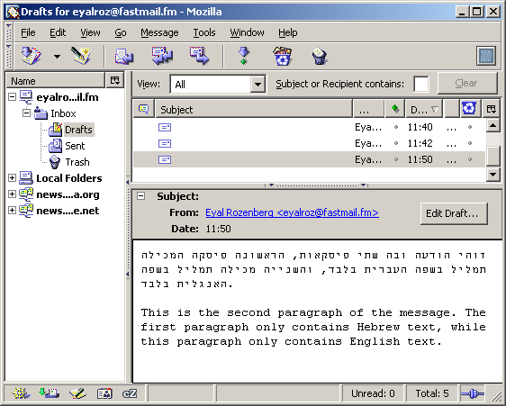כאשר מתחילים לכתוב הודעה חדשה, ללא התוסף, מוזילה קובע להודעה כיוון משמאל לימין. עם התוסף, שני גורמים משפיעים על כיוונה של הודעה חדשה: כיוון ברירת-מחדל (אשר יכול להיות מימין לשמאל או משמאל לימין), והברירה האם לענות להודעה בכיוון שלה (ולא להשתמש תמיד בברירת המחדל). שתי אלו הינן אפשרויות המופיעות בלוח האפשרויות של התוסף (בחלק Message Composition).
נניח שבחרנו כי כיוון ברירת-המחדל להודעות יהיה משמאל לימין, אך כי תשובה להודעה תאותחל לפי כיוון ההודעה. כאשר תלחצו על כפתור 'הודעה חדשה', יתקבל חלון בו המלל שתכניסו יופיע מכוון משמאל לימין:
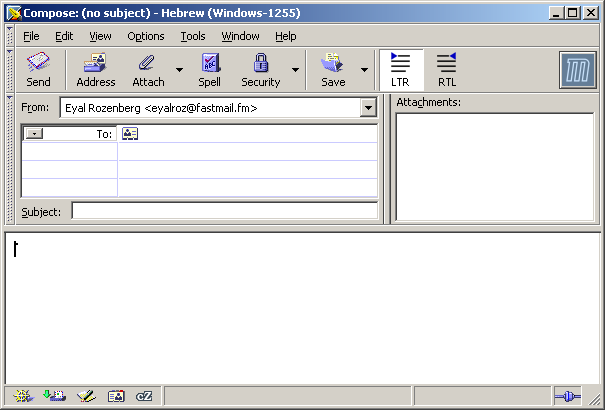(שימו לב לזוג כפתורי השליטה בכיוון - RTL/LTR - בסרגל הראשי; נדון בהם בהמשך)
לעומת זאת, אם תענו להודעה אשר הזיהוי האוטומטי קובע שכיוונה מימין לשמאל, גם התשובה תכוון כך:
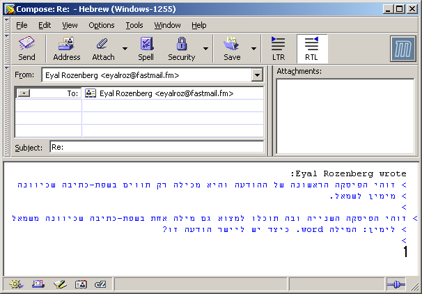בהודעות מלל פשוט יש רק כיוון כללי, של כל ההודעה. התוסף מאפשר ארבע דרכים לשנות אותו:
לחיצה על הכפתור המתאים לכיוון הרצוי (RTL - מימין לשמאל, LTR - משמאל לימין) בסרגל הכלים הראשי:
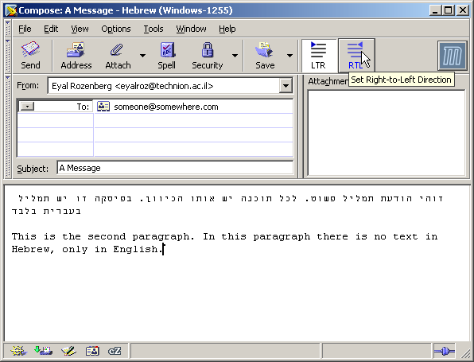בחירת הפריט Switch Message Direction בתפריט-ההקשר של שדה ההודעה:
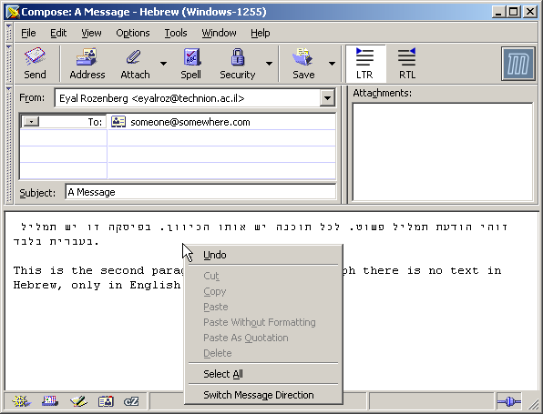בחירת הפריט Switch Message Direction בתפריט View של חלון חיבור ההודעה:
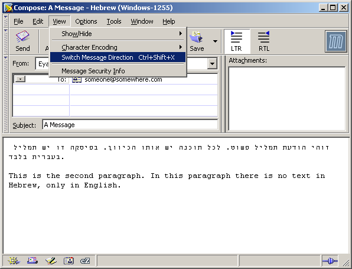פעולה כזו תכוון את ההודעה בכיוון הפוך לכיוון הנוכחי (כפי שתואר לעיל עבור הצגת הודעות):
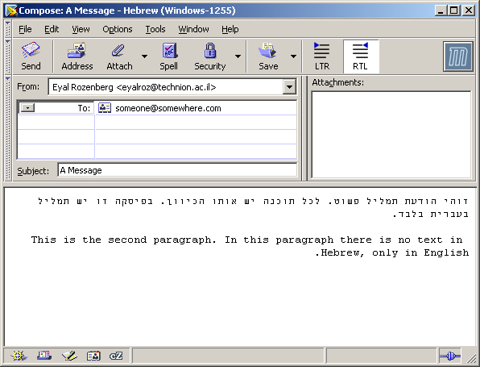ללא התוסף, החלון של לחיבור הודעות HTML מתוכנן במחשבה על תמליל ללא פסקאות - body text, ערוך שורות-שורות. התוסף משנה את ההתנהגות לזו המוכרת מ-Open Office ו-Microsoft Office: בעת חיבור הודעה נעשה שימוש טבעי בפסקאות. כך, לאחר התקנת התוסף, הקשת Enter תרד לפיסקה חדשה, והקשת Shift+Enter תרד לשורה חדשה בפיסקה הנוכחית (ע"י הכנסת line break).
בהודעות HTML, לכל פיסקה יכול להיות כיוון שונה מיתר הפיסקאות. התוסף משנה את התנהגות עורך ההודעות החדשות כך שבהקשת Enter, מתחילה פיסקה חדשה (כנהוג ב-OpenOffice ו-MS Word); כדי להכניס שורה חדשה בתוך פיסקה, יש להקיש Shift+Enter.
לסרגל העיצוב מתווסף זוג כפתורי כיוון פיסקה. אלו מתארים מהו כיוון הפיסקה הנוכחית:
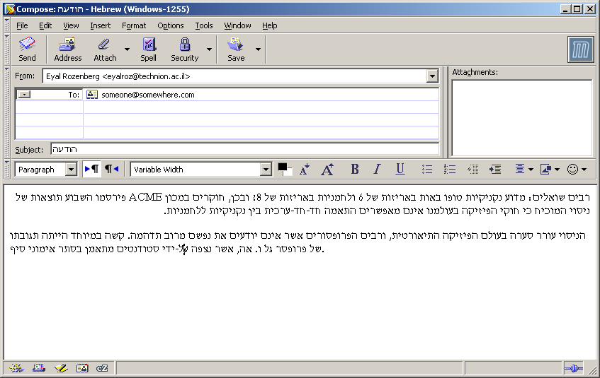כאשר מסומן מלל ממספר פיסקאות, הכפתורים מציגים את הכיוון המשותף לכל הפיסקאות הללו - אם יש כזה; אחרת, הן משקפות את העובדה שאין כיוון אחיד:
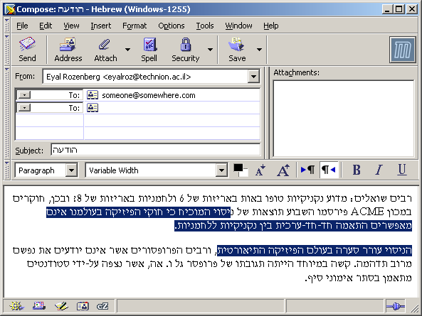לפני שניתן לשנות את כיוונה של פיסקה, יש להציב בה את הסמן; לחילופין ניתן לבחור מלל ממספר פיסקאות, כך ששינויי הכיוון ישפיע על כולן. לביצוע השינוי עצמו ישנן שלוש דרכים:
לחיצה על הכפתור המתאים לכיוון הרצוי (RTL - מימין לשמאל, LTR - משמאל לימין) בסרגל הכלים הראשי:
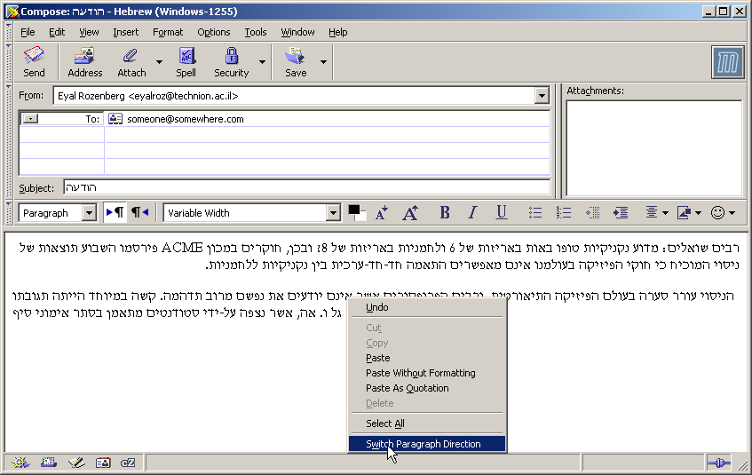בחירת הפריט Switch Paragraph Direction בתפריט-ההקשר של שדה ההודעה:
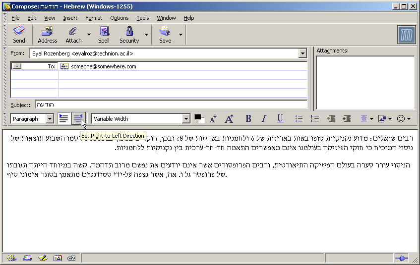בחירת הפריט Switch Paragraph Direction בתפריט Format של חלון חיבור ההודעה:
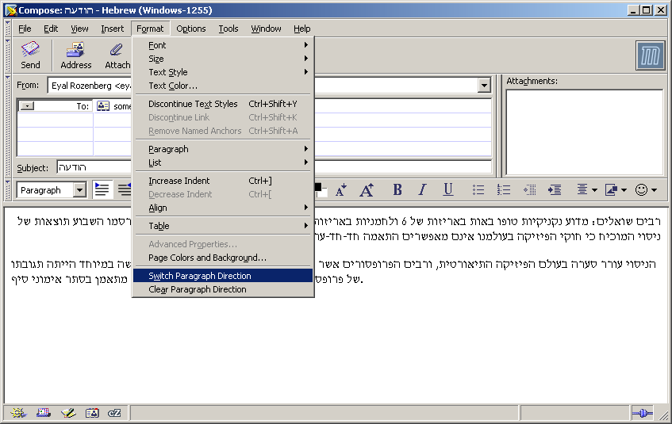ניתן להחליף את 'הכיוון הכללי' של המסמך באמצעות פריט-התפריט View->Switch Message Direction, כמו במקרה של הודעת מלל פשוט. החלפה זו קובעת את כיוון כל הפיסקאות עבורן לא נכפה כיוון מפורש. ניתן להסיר את כפיית הכיוון של פיסקאות מסומנות (או של הפיסקה הנוכחית, בהיעדר סימון), באמצעות פריט-התפריט Format|Clear Paragraph Direction.
תקן Unicode כולל תווים שונים להשפעה על הצגתו של תמליל, מעבר לכיוון החיצוני שנקבע לו. שניים מן התווים החשובים ביניהם הינם 'סימן מימין-לשמאל' (Right-to-Left Mark) ו-'סימן משמאל-לימין' (Left-to-Right Mark). התוסף מאפשר להכניס תווים אלו להודעות מלל פשוט ו-HTML, באמצעות בחירת התו הרצוי מתפריט Insert->Control Characters:
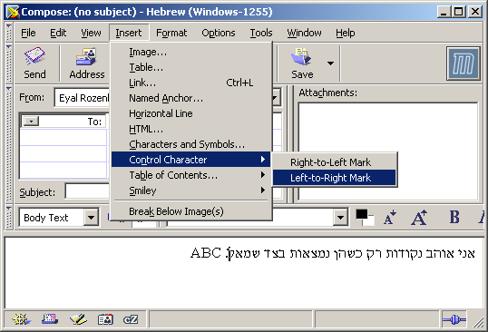או מתפריט ההקשר (בתת-התפריט Insert Control Characters):
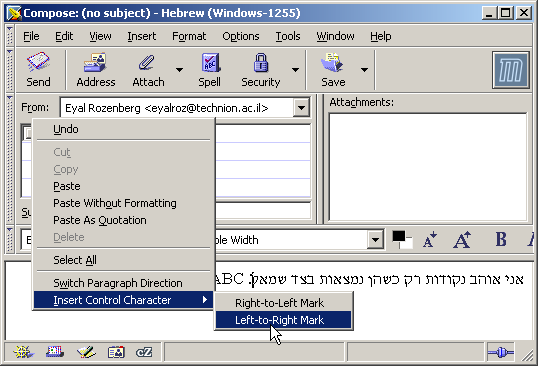אלו אינם תוים נראים לעין - רק השפעתם על הצגת הטקסט ניתנת להבחנה:
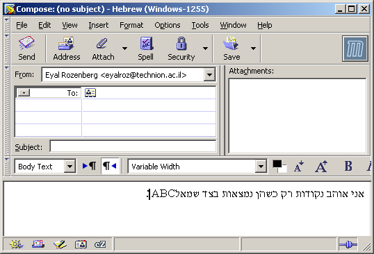עם זאת, תוים אלו מהווים חלק ממלל ההודעה ונשמרים גם בהודעות מלל פשוט וגם בהודעות HTML.